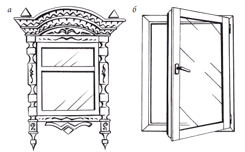
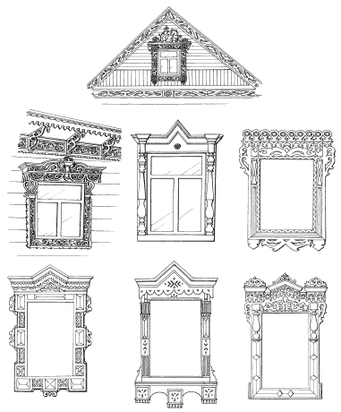

Деревянные окна.

Собственно окно состоит из коробки, закрепляемой в оконном проеме, и рамы (или нескольких рам), подвижно крепящейся к коробке. Рама, то есть оконный переплет, – несущая оправа для оконного стекла и вместе с ним называется створкой окна. Створки окна могут быть распашными, поворотными и раздвижными. В верхней части может быть расположена фрамуга с дополнительной открывающейся створкой – форточкой.
По количеству рам, установленных в разных плоскостях, различают окна с одиночными, двойными и спаренными рамами. Одиночные рамы бывают с одиночным, двойным и очень редко – тройным остеклением. Одиночные рамы, у которых стекла изолированы друг от друга воздушной или вакуумной прослойкой, называются стеклопакетами. Окна с двойными рамами представляют собой конструкцию с двумя устанавливаемыми параллельно и открывающимися независимо друг от друга рамами. Спаренные рамы – это две рамы, вставленные в одну общую раму и соединенные между собой винтами. Открывается такая рама как одна створка.
Спаренные рамы при условии хорошей подгонки их друг к другу мало уступают стеклопакетам. Для исключения попадания влаги в промежуток между стеклами мыть внутренние поверхности стекол и рам можно только в сухую теплую погоду, после чего следует хорошо высушить вымытые поверхности. Для предупреждения конденсации остаточной влаги между стеклами кладут влагопоглощающие вещества – адсорбенты, обернув их предварительно одним-двумя слоями марли. Это могут быть активированный уголь, соль или сахар.
Окна с двойными рамами – наиболее простое конструктивное решение остекления оконных проемов. Основной их недостаток – возможность циркуляции воздуха между рамами, особенно в том случае, если имеются форточки.
Современные деревянные окна изготавливают из профилированного клееного бруса, который в отличие от рам из цельной древесины практически полностью избавлен от типичных деревянных недостатков. Бездефектные доски толщиной 20–30 мм подвергают многоэтапной сушке, сращивают по длине в ламели и склеивают под высоким давлением. При их производстве используется высококачественная древесина северной сосны.
Зимой окна с двойными рамами показывают себя не самым лучшим образом: происходит конденсация влаги на внутренних стеклах, а при сильных морозах – промерзание стекол, то есть образование на них инея. Чтобы этого не допустить, необходимо хорошее уплотнение стыков оконных коробок с рамами.
Клееный брус сочетает в себе превосходные теплоизоляционные и эстетические качества с повышенной прочностью, устойчивостью к биологическому поражению, деформационной стабильностью при перепадах температуры и влажности. Такой материал с успехом используют даже для изготовления окон, которые устанавливают в мансардах или скатных крышах. Оконные блоки, встраиваемые в кровельный скат, способны выдерживать экстремальные погодные нагрузки в виде ураганного ветра, крупного града и пр.
Современные оконные конструкции изготавливают не только из дерева, но также из пластиковых или алюминиевых системных профилей (рис. 32).

Оформление деревянных окон
Если вы являетесь владельцем деревянного дома, то прекрасным вариантом оформления окон вашего дома может стать резьба по дереву. С древних времен деревянные узоры украшают русские избы. Мастера резьбы по дереву очень точно и оправданно выбирали места для украшений дома. Наряду с искусным украшением карнизов, фронтонов, ворот и крыльца, мастера украшали наличники окон и ставни. Деревянные дома, имеющие резьбовые украшения, давно считаются ценными памятниками архитектуры. Богатство фантазии мастеров резьбы по дереву можно наблюдать в Поволжье. Мягкий климат, в отличие от длительных и слишком суровых условий работы северных мастеров, несомненно, способствовал их творчеству.
Изначально резные кружки, треугольники и кресты имели символический смысл: им придавали значение сильнейших языческих оберегов. Сегодня они составляют прекрасную композицию в орнаменте русского деревянного дома.
Украшенные резьбой наличники окон выполняют не только декоративную функцию. Они предназначены для закрытия щелей, неизменно образующихся между бревенчатой стеной дома и рамой окна.
Плоская резьба, которая и по сей день используется для оформления наличников окон и ставен, берет свое начало в XIX в. Настоящие шедевры создают мастера резьбы по дереву, благодаря уникальному сочетанию ритмического геометрического узора со сквозной прорезью. Корни сюжетов изображений для резьбы уходят в языческие верования славян. Резные изображения являлись символами огня и солнца, которые глубоко почитали наши предки.
Деревянный дом, украшенный резьбовыми наличниками на окнах, а тем более резными ставнями, становится уникальным и выгодно подчеркивает индивидуальность его хозяина. Нельзя забывать и то, что дерево – живой материал. Даже после сруба оно сохраняет жизненную энергию, накопленную за годы своего роста. Особенно хорошо сохраняет энергию дуб. Ведь он растет не один десяток лет и хранит в себе коллосальные запасы жизненной силы. Резьбовые изделия из дерева придают дому уют и тепло.
Не хватает слов, чтобы выразить все чувства, которые переполняют душу, когда смотришь на подлинные шедевры резного творчества. Жаль, что это искусство забыто, и на сегодняшний день считается почти утраченным. «Теплые», в душевном смысле, дома вытеснили безликие и бездушные каменные и бетонные здания, похожие друг на друга и не имеющие индивидуальности и уникальности. В завершение предлагаем вниманию читателей несколько образцов уникальных резных оконных наличников, которые не оставят равнодушными людей с хорошим эстетическим вкусом и, может быть, кого-то вдохновят на создание не менее уникальных произведений (рис. 33).
